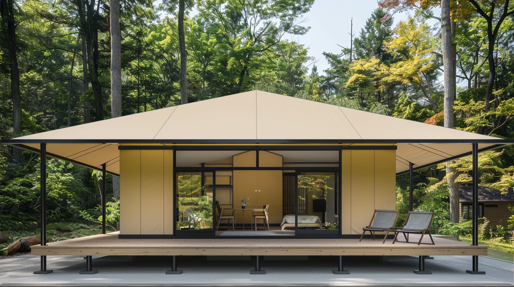

전통 호텔 건축 대비 투자비 60~80% 절감, 공사 기간 70% 단축. 2~3주 만에 운영을 시작하고, 40% 높은 투자 수익률을 실현하세요. 특허받은 무용접 조인트로 10~15년 반영구 구조.

글램핑 리조트는 전통 호텔 건설비의 20~40%로 동일한 프리미엄 숙박 경험을 제공합니다. 92% 이상의 고객 만족도, 연 15% 시장 성장률 — WOCS의 특허 기술로 내구성과 디자인을 모두 잡으세요. 허허벌판에서 수익형 리조트까지, 부지 조사·인허가·설계·시공·운영 컨설팅을 원스톱으로.
전통 건축 대비 70% 단축된 공사 기간. 2~3주 내 운영 개시 가능.
건축물 대비 60~80% 저렴한 투자 비용으로 동일한 프리미엄 경험 제공.
이동 가능한 반영구 구조로 환경 영향을 최소화하고 원상복구가 용이합니다.
파도 소리를 들으며 Signature 시리즈에서의 하룻밤. 해변 리조트에 WOCS 글램핑를 배치하여 프리미엄 숙박 경험을 제공하세요.
숲 속 고요함과 럭셔리의 만남. 산악 지형에 최적화된 WOCS 글램핑로 차별화된 산림 리조트를 구축하세요.
와이너리, 농장과 결합한 체험형 리조트. 관광농원과 글램핑을 결합하여 다양한 수익원을 확보하세요.
전통 호텔 대비 40% 높은 투자 수익률
에코 리조트 시장 연 15% 성장
독특한 경험으로 92% 이상 고객 만족도
이메일 입력만으로 핵심 자료를 즉시 받아보세요
사진과 텍스트만으로는 결정하기 어렵습니다. 화순 쇼룸에서 실제 글램핑를 만져보고, 16년 경력의 대표가 직접 상담합니다.